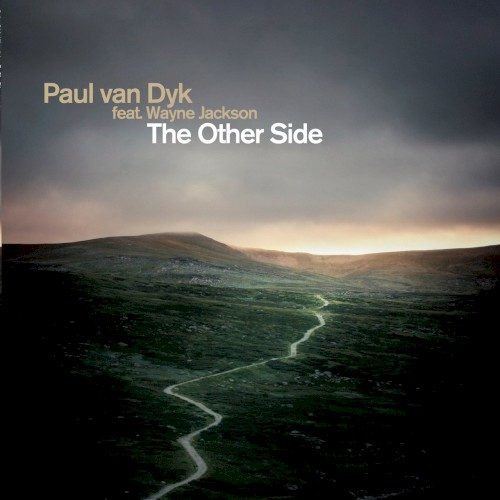

Paul Van Dyk feat. Wayne Jackson - The Other Side


(Mute/EMI)
Paul Van Dyk. The name evokes images of sweaty, fevered clubs, a veritable blast of colourful high-powered lasers and a massive outpouring of powerful dancefloor emotion. With his dead-serious Germanic manner he remains the global trance scene’s most worshipped figure, harking back to the days when god really was a DJ. Continuing his insistence that dance music really can be political, his latest single The Other Side is dedicated in memory of the victims of the tsunami late last year.
Before you choke on your lunch with a whimper of “not another self-indulgent charity single”, the results aren’t as cringe worthy as you might assume. The radio mix begins with the sweet strum of an acoustic guitar, reminiscent of a melancholy folk song straight out of the 60’s, and paired with the electro bassline that swiftly follows it appears Van Dyk has tried his hand at a crossover single. But don’t be mistaken – The Other Side is still a soaring trance tune. Wayne Jackson channels Michael Hutchence with his vocal contribution, and while he may lack range, he’s emotive without ever overdoing it.
The real stormer is delivered in the form of the epic nine-minute original mix. While the big-synth chorus may sound a tad quaint and under-produced when stacked alongside progressive trance sound that has gained in popularity, it has enough of Van Dyk’s trademark spine-tingling emotion to stand tall on its own. He’s succeeded with something that is oh so rare and near impossible to nail – the trance crossover tune. Better yet, he’s managed to capture the bittersweet sadness of its subject matter: feelings of connection to a loved one who has passed away, and the hope of seeing them once again on the ‘other side’.
Deep Dish also drop in with a typically high-quality remix. Slowing it all down a little, the US house duo retains all the sweet melody of the original while putting it through their own progressive blender: deep and hypnotic, but staying close to the big, accessible sound that has seen them bust through the mainstream barriers this year. There are two passable renditions from Mark Spoon plus a lukewarm breaks mix, but the other tasty nugget comes in the form of the impressive electro-trance makeover from Martin Roth. Again retaining all the melody and emotion of the original, Roth gives it a shot in the arm with a smashing big room sound and some clever studio trickery.